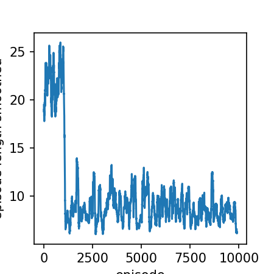
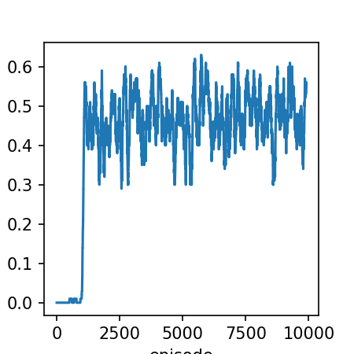
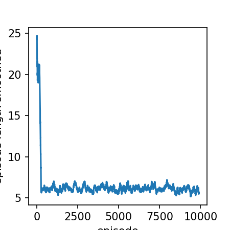
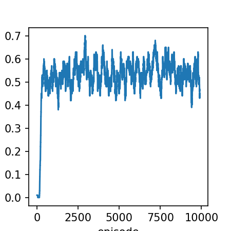

Note
Go to the end to download the full example code.
Example
# imports
import gymnasium as gym
import time
import itertools
import numpy as np
import matplotlib.pyplot as plt
import matplotlib.font_manager
from collections import defaultdict
import rldurham as rld
# actions
LEFT, DOWN, RIGHT, UP = 0,1,2,3
# import the frozen lake gym environment
name = 'FrozenLake-v1'
env = rld.make(name, is_slippery=False) # warning: setting slippery=True results in very complex environment dynamics where the optimal solution does not make sense to humans!
rld.seed_everything(42, env)
(42, 0, {'prob': 1})
TD(0) prediction
num_episodes = 10000
alpha = 0.2
gamma = 1.0
V = np.zeros([env.observation_space.n])
for episode in range(1,num_episodes+1):
s, _ = env.reset()
while (True):
a = np.ones(env.action_space.n, dtype=float) / env.action_space.n # random policy
a = np.random.choice(len(a), p=a)
next_s, reward, term, trun, _ = env.step(a)
done = term or trun
V[s] += alpha * (reward + gamma * V[next_s] - V[s])
if done: break
s = next_s
# ...this is just prediction, it doesn't solve the control problem - let's plot the policy learned from all this random walking
# helper code to plot the policy greedily obtained from TD(0) - ignore this!
policy = np.zeros([env.observation_space.n, env.action_space.n]) / env.action_space.n
for s in range(env.observation_space.n):
q = np.zeros(env.action_space.n)
for a in range(env.action_space.n):
for prob, next_state, reward, done in env.P[s][a]:
q[a] += prob * (reward + gamma * V[next_state])
best_a = np.argwhere(q==np.max(q)).flatten()
policy[s] = np.sum([np.eye(env.action_space.n)[i] for i in best_a], axis=0)/len(best_a)
rld.plot_frozenlake(env=env, v=V, policy=policy, draw_vals=True)
# ...the policy is note too bad after one greedy policy step, but it's not perfect - we really need to do control
On-Policy SARSA TD control
warning! sometimes this doesn’t converge! run it a few times…
def random_epsilon_greedy_policy(Q, epsilon, state, nA):
A = np.ones(nA, dtype=float) * epsilon / nA
best_action = np.argmax(Q[state])
A[best_action] += (1.0 - epsilon)
return A
Q = np.zeros([env.observation_space.n, env.action_space.n])
num_episodes = 10000
gamma = 1.0
epsilon = 0.4
alpha = 0.2
stats_rewards = defaultdict(float)
stats_lengths = defaultdict(float)
for episode in range(1,num_episodes+1):
s, _ = env.reset()
p_a = random_epsilon_greedy_policy(Q, epsilon, s, env.action_space.n)
a = np.random.choice(np.arange(len(p_a)), p=p_a)
for t in itertools.count():
next_s, reward, term, trun, _ = env.step(a)
done = term or trun
p_next_a = random_epsilon_greedy_policy(Q,epsilon, next_s, env.action_space.n)
next_a = np.random.choice(np.arange(len(p_next_a)), p=p_next_a)
Q[s][a] += alpha * (reward + gamma*Q[next_s][next_a] - Q[s][a])
stats_rewards[episode] += reward
stats_lengths[episode] = t
if done: break
s = next_s
a = next_a
if episode % 1000 == 0 and episode != 0:
print(f"episode: {episode}/{num_episodes}")
print(f"episode: {episode}/{num_episodes}")
env.close()
episode: 1000/10000
episode: 2000/10000
episode: 3000/10000
episode: 4000/10000
episode: 5000/10000
episode: 6000/10000
episode: 7000/10000
episode: 8000/10000
episode: 9000/10000
episode: 10000/10000
episode: 10000/10000
def moving_average(a, n=100) :
ret = np.cumsum(a, dtype=float)
ret[n:] = ret[n:] - ret[:-n]
return ret[n - 1:] / n
smoothed_lengths = moving_average(np.array(list(stats_lengths.values())))
plt.rcParams['figure.dpi'] = 150
plt.figure(1, figsize=(3,3))
plt.plot(smoothed_lengths)
plt.xlabel('episode')
plt.ylabel('episode length smoothed')
smoothed_rewards = moving_average(np.array(list(stats_rewards.values())))
plt.figure(2, figsize=(3,3))
plt.plot(smoothed_rewards)
plt.xlabel('episode')
plt.ylabel('reward (smoothed)')
- 
- 
Text(0.08333333333333037, 0.5, 'reward (smoothed)')
def pi_star_from_Q(Q):
done = False
pi_star = np.zeros([env.observation_space.n, env.action_space.n])
state, _ = env.reset() # start in top-left, = 0
while not done:
action = np.argmax(Q[state, :])
pi_star[state,action] = 1
state, reward, term, trun, _ = env.step(action)
done = term or trun
return pi_star
rld.plot_frozenlake(env=env, policy=pi_star_from_Q(Q))
Off-policy Q-learning TD Control
warning! sometimes this doesn’t converge! run it a few times…
Q = np.zeros([env.observation_space.n, env.action_space.n])
num_episodes = 10000
gamma = 1.0
epsilon = 0.4
alpha = 0.2
stats_rewards = defaultdict(float)
stats_lengths = defaultdict(float)
for episode in range(1,num_episodes+1):
s, _ = env.reset()
for t in itertools.count():
p_a = random_epsilon_greedy_policy(Q, epsilon, s, env.action_space.n)
a = np.random.choice(np.arange(len(p_a)), p=p_a)
next_s, reward, term, trun, _ = env.step(a)
done = term or trun
Q[s][a] += alpha * (reward + gamma*np.max(Q[next_s][:]) - Q[s][a])
stats_rewards[episode] += reward
stats_lengths[episode] = t
if done: break
s = next_s
if episode % 1000 == 0 and episode != 0:
print(f"episode: {episode}/{num_episodes}")
print(f"episode: {episode}/{num_episodes}")
env.close()
episode: 1000/10000
episode: 2000/10000
episode: 3000/10000
episode: 4000/10000
episode: 5000/10000
episode: 6000/10000
episode: 7000/10000
episode: 8000/10000
episode: 9000/10000
episode: 10000/10000
episode: 10000/10000
# plot the results
smoothed_lengths = moving_average(np.array(list(stats_lengths.values())))
plt.rcParams['figure.dpi'] = 150
plt.figure(1, figsize=(3,3))
plt.plot(smoothed_lengths)
plt.xlabel('episode')
plt.ylabel('episode length smoothed')
smoothed_rewards = moving_average(np.array(list(stats_rewards.values())))
plt.figure(2, figsize=(3,3))
plt.plot(smoothed_rewards)
plt.xlabel('episode')
plt.ylabel('reward (smoothed)')
- 
- 
Text(0.08333333333333037, 0.5, 'reward (smoothed)')
Total running time of the script: (0 minutes 10.947 seconds)